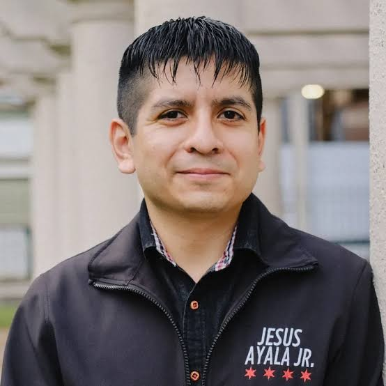

34th Ward · School Board Election 2026
Jesus Ayala Jr. Earns Ald. Bill Conway's Endorsement in District 7A School Board Race
A CPS graduate and nonprofit leader is challenging appointed incumbent Emma Lozano in Chicago's first fully elected school board election.


On November 3, Chicago voters will elect every member of the Chicago Board of Education for the first time. In District 7A, which includes the 34th Ward's southwest corner, Jesus Ayala Jr., a Chicago Public Schools graduate and former nonprofit executive, is challenging incumbent Emma Lozano, whom Mayor Brandon Johnson appointed to the board in 2024. Ayala's campaign announced on Instagram that he has been endorsed by Ald. Bill Conway, the 34th Ward's alderman and Democratic committeeperson.
Why This Election Matters
Chicago's school board has been appointed since it was created in 1837. That began to change in 2024, when voters elected 10 members from newly drawn districts while the mayor appointed the other 10 and the board president. This year, all 21 seats are on the ballot, 20 district seats plus a board president elected citywide.
The board approves the district's budget, can raise property taxes, signs off on union contracts and decides which charter schools open and stay open. CPS began this year's budget process facing a projected $732.5 million deficit, and in July the board passed a record $10.11 billion budget that counts on $150 million in additional state funding Springfield has not committed.
The Race in District 7A
District 7A runs from the Near West Side through Pilsen, Little Village, Garfield Ridge and Archer Heights. Within the 34th Ward, it covers roughly the area around Little Italy and University Village. The district has 48 public schools, and its students are mostly Latino and mostly from low-income families. Nearly half are English learners.
Lozano, a longtime pastor and community activist, is endorsed by the Chicago Teachers Union and Our Schools Chicago, and she voted for the amended July budget. Ayala is endorsed by the SEIU Illinois State Council, the Chicago Federation of Labor, Common Ground Collective and The Urban Center, and has support from the charter school group INCS Action PAC. The two unions at the center of the race, the CTU and SEIU, were once close allies and are backing different candidates here.
Ayala's Background
The son of Mexican immigrants, Ayala, 34, is a CPS graduate who says the schools helped him learn English and gave him mentors who shaped his path. Starting in fourth grade, he spent weekends helping his family at the Buyers Flea Market. He earned a bachelor's degree in economics and music from Lake Forest College on a CPS scholarship and a master of public administration from the Illinois Institute of Technology, and is now pursuing an MBA at the University of Chicago Booth School of Business.
His career has centered on education. He served with City Year at Gage Park High School, supported City Colleges students at One Million Degrees, and most recently was chief operating officer of MetroSquash, a youth development nonprofit, from 2020 until August, when he left to campaign full time. He also served as a community representative on the Jones College Prep Local School Council, and lives in Pilsen.
Where He Stands
Ayala lists academic outcomes, chronic absenteeism and support for students from immigrant families as his top issues, and has said the board spends too much time on single-school matters instead of districtwide ones. On the budget, he told Chalkbeat that relying on unsecured state funds is a mistake, and in a Sun-Times questionnaire he called for an “all-of-the-above approach,” pushing for more state funding, pursuing progressive revenue and reviewing spending line by line. He opposes raising the property tax levy to the maximum every year, opposes opening new charter schools while supporting existing ones, and opposes closing schools.
In His Own Words
Asked about his highest priorities for the board, Ayala said,
“My highest priority is ensuring that every discussion the Board has and every decision the Board makes is grounded in students, their experience, growth, and outcomes.
“I also want to democratize governance and include the community more. I’ve always felt it shouldn’t matter who is in this seat as it should be community voice driving the decisions, but we need a board member who’s willing to do the work of building communication and feedback channels.
“Ultimately, I want a Board that spends less time reacting to crises and more time building a sustainable school system that delivers for all students.”
Asked how he would have voted on the July budget, he said,
“I would have voted against the amended budget, but I 100% agree that the state of Illinois needs to do better in terms of fully funding our schools.
“However, counting on $150 million in state funding that has not been committed is not a responsible long-term solution.
“An unbalanced budget risks creating even greater disruptions midway through the school year, potentially forcing cuts when students and families can least afford them.
“We’ve seen how this plays out before.”
Asked what he wants District 7A residents to know, he said,
“My experience often gets summarized down to 2 sentences, but I’ve been incredibly fortunate to dedicate my career to helping young people access meaningful opportunities. From helping 9th graders transition to high school and stay on track academically with City Year Chicago, to connecting our community college students with scholarships and internships with One Million Degrees, to serving as Chief Operating Officer at MetroSquash where we taught students as young as 3rd grade to play squash, then snuck in tutoring and other supports to set them up for success.
“I’ve worked directly with students and families, supported young people on their paths to college and careers, and led organizations responsible for delivering educational programs. Serving on the board would be an extension of my work.”
The Money
Ayala had raised $34,908 as of September 16, compared with $1,821 for Lozano, according to the Sun-Times. Chalkbeat reports most of his money came from an SEIU-affiliated political action committee and Common Ground Collective, a PAC opposed to the Chicago Teachers Union that is largely funded by Michael Sacks. This is Ayala's second try for the board. In 2024, his name was removed from the ballot after a successful challenge to his nominating petition signatures.
At a Glance
Election day: Tuesday, November 3, 2026. Polls open 6 a.m. to 7 p.m.
Early voting: In all 50 wards starting October 19, plus downtown at 137 S. State St. and 69 W. Washington St.
Registration: Online registration ends October 18. Same-day registration with two forms of ID is available through Election Day.
Vote by mail: Applications due by 5 p.m. October 29
District 7A candidates: Emma Lozano (incumbent, appointed 2024); Jesus Ayala Jr. (ayalajrforstudents.com)
Find your district: Chalkbeat's 2026 school board district map